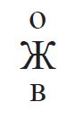

Беседа 3793 от 3877 · Беинса Дуно
Възприемане и предаване
Съвременните хора искат да имат добро разположение, да имат светъл ум и права мисъл, а също така добри чувства и постъпки. Въпреки това, или малко успяват в желанието си, или почти нищо не постигат. – Защо? – Защото не спазват известни правила, не внимават, когато работят. Ако шивачът шие невнимателно, може да убоде един от пръстите си с иглата и да причини инфекция на ръката си. Малкото бодване нарушава равновесието в целия организъм. Следователно, за да бъде разположен и да мисли право, човек не трябва да си причинява никаква инфекция нито в ума, нито в сърцето, нито в душата. Пазете ума, сърцето и душата си чисти, неопетнени. – Искам да опитам нещата. – Не можеш да опитваш всичко. Как ще опиташ вкуса на захар, залята с азотна киселина? Докоснеш ли езика си до парченце от тази захар, ще си причиниш болка. Всеки опит трябва да бъде разумен и на място. Допускате ли неверни, криви мисли и чувства в ума и сърцето си, сами се отравяте. Неверните мисли и чувства, както и кривите постъпки, съдържат отрова в себе си.
Хората не успяват в живота си, защото нямат ясна представа за себе си. Мнозина мислят, че могат да направят, каквото желаят. Нека попълнят една полица, сами да се подпишат и да отидат в някоя банка, да получат срещу нея известна сума. Така ще разберат, могат ли да постигнат желанието си. Още на първата врата ще им откажат. Нека се опитат да кажат на един от чиновниците стиха от Евангелието "Бог е Любов" и да получат срещу това желаната сума. За да опита силата си, човек трябва да направи опит. Без опити нищо не се постига. Ще кажете: Ние можем да постигнем всичко. Кои са тези "ние"? При това, не е достатъчно само да кажете нещо, но трябва да опитате силата на думите, с които си служите. Кажете, например, че ще се подмладите и наистина, да се подмладите. Спрегнете глагола "подмладявам се" във всички лица и станете млади. Кажете: "Аз ще се подмладя, ти ще се подмладиш, той ще се подмлади. Ние, които следваме пътя на доброто, ще се подмладим. Вие, които следвате пътя на доброто, ще се подмладите. Те, които следват пътя на доброто, ще се подмладят”. Следвайте пътя на доброто, за да се подмладите. Не вървите ли в този път непременно ще остареете. Има смисъл да остарееш, но да станеш мъдър и разумен. Обаче, страшно е да остарееш и да обезумееш. Страшно е и да бъдеш млад, но пълен със слабости и недъзи. Такава старост и младост не са Божествени.
Какво представляват младият момък и младата мома? – Те са търговци, които купуват и продават на едро. Щом видят някоя хубава къща или нива, веднага пожелават да я купят. Младата мома купува момъка, а момъкът – младата мома. Има нещо в младите, което може да се купи; това е стоката, която се продава и купува. Обаче, самата мома и момъка никой не може да купи. Погрешката на момъка се заключава в това, че като купува стоката на момата, той мисли, че купува и момата. И момата се заблуждава в същото. Тя може да купи стоката на момъка, но момъка никога не може да купи. Това е все едно да мислиш, че като купуваш дърва на пазара, с тях заедно купуваш и магарето.
Един човек отива на пазара да си купи дърва. Вижда едно магаре, добре натоварено, и пита селянина: Колко продаваш магарето? Селянинът казал цената. Купувачът вади пари и плаща. Тръгва да си отива и потегля магарето със себе си. – Стой, къде водиш магарето? – Купих го, затова го водя у дома си. – Лъжеш се, приятелю, аз ти продадох товара дърва, който магарето носеше, но не и самото магаре. Дървата ще вземеш, а магарето ще оставиш на господаря му. Не е позволено да мислиш криво и да правиш подобни погрешки. Животът налага известни правила на човека, които трябва да спазва. Иначе, сам ще си създаде страдания. Ако си цигулар, преди всичко, ще държиш цигулката правилно, ще управляваш лъка добре и след това ще свириш пред публика. Не спазваш ли нужните правила, каквито усилия да правиш, никой няма да те хареса. Публиката ще те освирка и ще те застави да напуснеш сцената.
Сега аз искам да ви дам такова знание, което да осмисли живота ви и да ви направи щастливи. Това не значи, че трябва да се откажете от старото си знание. Ако знанието, което имате, ви задоволява, дръжте го; ако не ви задоволява и ви прави нещастни, турете го настрана. Знаеш нещо, но не си сигурен в знанието си, не си го проверил. Откажи се от това знание. Според едни учени, разстоянието от земята до слънцето е 92 милиона мили, а според други – 93 милиона. Кое от двете изчисления е вярно? Ще кажете, че един милион мили не е голяма разлика. Не е така. Какво ще бъде положението ти, ако тръгнеш за слънцето според изчисленията на първите учени? Като извървиш това разстояние, ще се окаже, че трябва да пътуваш още един милион мили. Ти не си готов, ще увиснеш в пространството и ще пропаднеш. Друг е въпросът, ако разликата е половин метър – ще прескочиш. Даже един метър да е, пак не е страшно – ще скочиш. Ако е десет метра – загубен си. Ако е един милион мили? Всяка невярна мисъл внася тъмнина в ума; всяко невярно чувство внася студ в сърцето, и всяка невярна постъпка внася безсилие във волята. Това значи загуба. Всяка вярна мисъл внася светлина в ума; всяко вярно чувство внася топлина в сърцето; всяка вярна постъпка внася сила във волята. Това значи печалба, придобивка. Ето защо, ако искаме да бъдем умни, мислите ни трябва да бъдат верни; ако искаме да бъдем добри, чувствата ни трябва да бъдат верни; ако искаме да бъдем силни, постъпките ни трябва да бъдат верни.
И тъй, не е достатъчно да се стремиш към силата, но трябва да имаш предвид условието, за да бъдеш силен. Сам по себе си човек не може да бъде силен. Ако не е с Бог, и Бог – с него, не може да бъде силен. Ако човек не пребъдва в Бог, и Бог – в човека, той не може да разчита на никаква сила. В обективен смисъл, ти не можеш да бъдеш силен, ако въздухът не влиза и излиза от тебе, т.е. ако не вдишаш въздуха и не го издишаш. Да вдишаме въздух, това значи, въздухът да пребъдва в нас; да издишаме въздух, това значи, ние да пребъдваме в него. Ако не можеш да вдишваш дълбоко въздух и да го издишаш, не можеш да бъдеш силен. Като вдишаш и издишаш въздух, ти любиш, т.е. приемаш и предаваш Любовта. Любовта иде от Бог и влиза в нас. След това ние я предаваме на ближните си. Като вдишаш, ти приемаш Любовта. Като издишаш, ти я предаваш на ближните си. Приемането и предаването на Любовта не е нищо друго, освен вдишка и издишка. Това прави човека силен. – Защо трябва да обичам? Защо трябва да възприемам Божията Любов? – За да възприемеш живота. Ако не проявиш любов към ближния си, животът не може да дойде.
Като се говори за връзката между Любовта и живота, някои запитват: Вярно ли е това? – Може да опитате. Как познавате, дали водата, която ви предлагат, е чиста? – Като се пие. Ще вземете чаша вода и ще я изпиете. Ако усещате приятност, лекота на стомаха си, водата е хубава; ако усещате тежест на стомаха си, тя не е добра за пиене. Така проверявате и качеството на хляба. Доброкачественият хляб се отразява добре на стомаха. Добрата и светла мисъл се отразява добре върху ума; лошата мисъл причинява тъмнина в ума. Доброто чувство произвежда лекота и приятност на сърцето; лошото чувство причинява мъка и неразположение на сърцето. Добрата постъпка внася сила във волята; лошата постъпка разслабва волята. Три неща са в състояние да нарушат равновесието на човека: когато не възприема, както трябва, светлината, топлината и силата. Щом ги възприема правилно, равновесието му се възстановява.
Често чувате да се говори: Да се обичаме! – Как ще познае човек, че го обичате? – От вашия поглед. Ако го погледнете, и погледът ви внесе нещо в него, вие го обичате. Погледнеш ли го един път с любов, престани да го гледаш. Ако продължаваш дълго време да го гледаш и все му даваш нещо, той ще затвори очите си и ще каже: Достатъчно е това, преядох, не мога повече да нося. Видиш ли, че някой затваря очите си пред тебе, не питай, защо ги затваря, но отстрани погледа си от него. Много си му дал. Ако ти затвориш очите си, това показва, че не искаш да му дадеш много. Тогава той ще продължава да те гледа, иска да му дадеш още. Някой път, който взема си затваря очите, а някога – който дава. Който дава малко, затваря очите си. Който взема много, също си затваря очите. Трябва да бъдете внимателни, да знаете, колко да давате и колко да взимате.
Друга погрешка, която правят хората, е отлагането. Те отлагат работата си за онзи свят и казват: Като заминем за другия свят, тогава ще се проявим, ще направим това, което тук не сме могли. Значи, в къщи не можеш да пееш, но като излезеш на сцената, ще пееш. Ако в къщи не можеш да пееш, на сцената съвсем ще пропаднеш. Ако на земята не живееш добре, на небето ще живееш още по-лошо. Който отива на онзи свят, трябва да е свършил земните науки. Ти си свършил само първи клас и мислиш, че като отидеш на небето, ще постъпиш в университет. Това е невъзможно. Там живеят възвишени същества, с висока наука. Не се живее лесно между тях. Те говорят на висок език, занимават се с висока наука, а ти за нищо не си готов. Слушаш, без да разбираш; гледаш, без да виждаш. Първото нещо, което се изисква от човека, е да възприема Любовта. Дали е на земята, или на небето, това се иска от него. – Как да възприема Любовта, като съм тъжен, огорчен и обиден? – Отвори капаците на прозорците си, да влезе светлината през тях. Излез рано сутринта навън и посрещни слънцето. Каквото ти даде то, приеми го с благодарност. Така скръбта ти ще се превърне в радост. Отваряш една книга, искаш да четеш – не можеш. Вечер е, тъмнина е навсякъде. Почакай малко, докато слънцето изгрее. Отвори тогава прозорците си и чети. Ти си отворил книгата, но не навреме. Бъди буден, когато слънцето изгрява, за да възприемеш Божествената светлина и топлина. Любовта ни дава възможност да четем; мъдростта ни дава възможност да разбираме, а истината – да прилагаме. Любовта носи семената на живота, мъдростта – условията за тяхното посаждане, а истината – условия за възрастването им. Ако нямаш семе, не можеш да садиш; ако не си го посял, не може да израсте. Който само говори за садене, без да сади, той живее с теория без практика. Такъв живот остава безрезултатен.
Изпейте песента: "Аз ще се подмладя, ти ще се подмладиш, той ще се подмлади". Ще кажете, че това е детинска песен. Детинските работи носят живот. Те обработват почвата и посаждат семената. Щом семето е посято в добра почва, скоро израства. – Трябва ли семето да се посади в земята? – Това е неизбежен път. Един трябва да замине за онзи свят, за да се роди друг. Щом се роди един, друг трябва да замине. Един слиза, друг се качва. И обратно: един се качва, друг слиза. Между този и онзи свят трябва да става обмяна. – Какво става, когато въжето на кофата, с която вадят вода, се скъса? – Веднага спускат кука в кладенеца, за да извадят кофата. Слизането и възлизането са естествени процеси в Божествения свят. И като слиза, и като възлиза, човек трябва да носи нещо със себе си. Ако нищо не носи, той нарушава равновесието в Божествения свят. Христос казва: "Събирайте съкровища”. Не можеш да слезеш на земята, нито да възлезеш на онзи свят, ако не носиш поне едно съкровище със себе си. Носи поне една идея, че Бог те обича, и ти Го обичаш. Така ти ще приемеш Неговата Любов и ще предадеш своята. Не приемеш ли Любовта и не я ли предадеш на другите, не можеш да отидеш на онзи свят, не можеш да познаеш Бог. Казано е в Писанието: "Това е живот вечен, да позная Тебе Единнаго, Истиннаго Бога”. Не можеш да познаеш Бог, ако нищо не си приел от Него и нищо не си дал от себе си. Даване, жертва са нужни в света. Бог дава и жертва всичко, и ти ще следваш Неговия пример. Без даване и без жертва няма условия за познаване.
Какво представя Любовта?

Мнозина се питат, ще се познаят ли на онзи свят. – Ако се обичат, ще се познаят. Познаването има отношение към Любовта. Ако обичаш човека, ще познаеш, колко е добър, учен или силен. – Кой човек е силен? – Който прави добро, който възприема и предава нещата правилно. Той прилага всичко, което говори. За силния, теорията и практиката са така свързани, както за химика теорията и опита. Не е химик този, който говори за кислорода, водорода, азота и въглерода, без да ги познава. Като говори за тях, той ги вижда, познава свойствата им и ги различава. Кислородът поддържа горенето, активен е, но сам той не гори; водородът гори, но не поддържа горенето; азотът нито гори, нито поддържа горенето – той е голям консерватор. На земята азотът задушава, пречи на живота и на горенето, но в духовния свят има голямо значение. Там той не позволява на злото да се шири. Щом срещне на пътя си злото, лошите мисли и желания, веднага ги задушава. Който иска да се справи с азота на земята, трябва да има Любов. Само Любовта и доброто парализират свойствата на азота. Първоначално апостол Павел се оплаквал, че, въпреки желанието си да прави добро, не успява. – Защо? – Азотът му препятствал. Обаче, когато възприел Божията Любов, никаква сила не могла да му се противопостави. Той казва: "Нищо не е в състояние да ме отдели от Христа, от Неговата любов”.
Като пеете песента "Аз ще се подмладя", ще разберете смисъла на подмладяването. Няма по-голямо благо за човека, да се подмлади в Любовта и да придобие живота. Няма по-голямо благо за човека, да се подмлади в мъдростта и да придобие знанието и светлината. Няма по-голямо благо за човека, да се подмлади в истината и да придобие свободата. Младите придобиват живот, знание и свобода, но трябва да ги проявят. Да се подмладиш, това значи, правилно да възприемаш и предаваш, правилно да вдишваш и издишваш. Приемеш ли нещо с любов, благодари за него. Предадеш ли нещо с любов, пак благодари. Няма по-голямо благо за човека от това, да възприема и предава нещата с любов и свобода. Това значи, да живееш за Бог.
Дръжте се за перпендикуляра на живота, т.е. за Любовта. Казва се, че Бог е неизменен. – Защо? – Защото е перпендикуляр, основа, мярка на живота. Няма сила в света, която може да измести перпендикуляра на живота. Един е перпендикулярът, но проявите му са много. Затова казваме, че Любовта се проявява като живот, знание, светлина, свобода, сила, движение, учение и работа. Различавайте проявите на Любовта и вървете напред. – Защо някои хора не се обичат? – Защото не дават това, което възприемат, нито възприемат това, което им се дава. Щом възприемането и предаването не става правилно, и Любовта не се проявява. Хората се обичат, когато обмяната между тях е правилна. – Къде е мястото на перпендикуляра в човешкото лице? – На носа. Носът е самият перпендикуляр. Линиите, теглени от основата на носа към очите, представят мъдростта и истината. Значи, Любовта е в носа, а мъдростта и истината – в очите. Чрез едното око се проявява знанието, а чрез другото – свободата. Следователно, ти можеш да обичаш човека, ако имаш знание и свобода. Който възприема и предава Любовта, той е свободен човек, той има знание. Казваме, че децата са свободни. – Защо са свободни? – Защото възприемат правилно и предават правилно майчината любов. Възрастните не са свободни, защото, когато възприемат и предават любовта, мислят. Те казват: Този не заслужава моята любов, онзи не я заслужава. Какво щеше да стане с хората, ако и слънцето разсъждаваше като тях? То щеше да мисли, на кого да изпраща светлината си и на кого да не я изпраща. И, в края на краищата, светът щеше да потъне в мрак. Днес, когато хората воюват, когато се бият и унищожават, слънцето грее еднакво и навсякъде изпраща своята светлина и топлина.
Днес българският народ плаче за своя цар. – Кога плаче човек? – Когато настане суша. Сушата втвърдява земята; каквото посееш, не расте. Сълзите обаче, ще полеят земята, и житото ще израсте. След това иде ред на житото, и то започва да плаче. През големи страдания минава житото, но то израства отново и дава плод. Затова е казано, че ако семето не падне на земята и не изгние, не може да израсте и да даде плод. Следователно, нека плачат българите, да полеят сухата земя. Нека плачат българите, да израсте житото им. След това ще се радват на плодородието, на новия живот. Българският цар и сега живее. Той дава доклад пред Господ за българите, за техните нужди. Плачете за изгубените възможности. Радвайте се, ако сте приложили Любовта. – Кога губи човек възможностите си? – Когато не прилага Любовта. Прилагайте Любовта и не се страхувайте. Някой говори за Любовта, но прави разлика между хората. Той намира, че не всеки човек заслужава любовта му. Това е криво разбиране. Любовта чисти всичко. Тъй щото и грешният, и нечистият стават чисти от Любовта. Когато отива при Бог, човек се очиства. Когато се отдалечава от Него, отново става нечист. Каже ли някой, че е нечист, това показва, че има малко любов в себе си. Каже ли, че е чист, любовта му е по-голяма. Дръжте прозорците си всякога отворени за да не губите любовта си, да възприемате Божията Любов и да я предавате. Без Любовта няма никакъв подтик в живота. Любовта към Бог е първият подтик в живота. Любовта към ближния е вторият подтик, а любовта към себе си е третият подтик. С други думи казано: Първият подтик на Любовта иде от бащата, вторият подтик иде от майката, а третият – от детето. Трябва да възприемем Любовта, както бащата я дава. Да предадем Любовта, както майката я предава. Детето пък да предава любовта си към майка си и баща си, както я приема от тях.
И тъй, искате ли да знаете, какво представя Любовта и как може да се възприеме и предаде, обърнете внимание на възприемането и предаването на своите мисли и чувства. Ако не можете да възприемете и предадете правилно една светла мисъл, едно светло чувство и една светла постъпка, вие не разбирате Любовта. Който възприема и предава правилно мислите, чувствата и постъпките си, той се намира под влиянието на Любовта, като основа на живота му; на мъдростта, като знание и светлина, и на истината, като условие за съграждане на неговата външна форма – черупката на неговия живот. Това е влиянието на Духа върху човешката душа. За Него е казано, че оживява и възкресява. За да оживеете, ставайте рано сутрин, да възприемате слънчевите лъчи. Отворете широко очите и ушите си да виждате Онзи, Който ви говори, и да слушате думите Му. Не пропускайте моментите. Един момент от Божието време струва милиарди. С нищо не може да се плати един такъв момент.
Като слушат да им се говори така, мнозина казват: Остаряхме вече, защо не знаехме това по-рано, когато бяхме млади? – Ако бях дошъл по-рано, нищо нямаше да се постигне. Тогава бяхте търговци, занимавахте се с купуване и продаване на стоки. Тогава мислехте само за пари, да спечелите, колкото може повече. Каквото и да ви говорех, щяхте да кажете: Остави ни свободни, сега имаме търговски предприятия, които не можем да напуснем. Едно време сте били видни търговци, общественици, талантливи и гениални хора. Днес всичко сте изгубили и сте станали обикновени хора. Човек губи лесно онова, което е спечелил лесно. Не е лошо, че сте били видни хора и сте слезли до положението на обикновени хора. Човек се учи и при двете положения. Като виден човек, той възприема; като обикновен, дава нещо от себе си. По-рано носил високи титли, а сега е обикновен човек, от когото всички искат да даде нещо. Който го срещне, казва му: Хайде, дай нещо от това, което си възприел от Господа.
Закон е: който живее в Божествения свят, трябва да дава изобилно. Не питай, дали някой заслужава твоята любов, или не я заслужава. Давай изобилно от любовта. Тя е извор, който постоянно тече и пои всичко, каквото срещне на пътя си. Всеки, който се е разколебал в даването и се е опитал да ограничи Любовта, се е отклонил от правия път на живота. Слушай гласа на Любовта. Адам чу гласа на Бог, но не повярва на думите Му. Бог ясно и категорично му каза: "От всички плодове на Рая ще ядеш; няма да ядеш само от дървото за познаване на доброто и злото”. Въпреки това, той яде, и сам се осъди на страдания и смърт. Ще кажете, че може да не е разбрал думите на Господ. – Разбрал ги е, но проявил непослушание. Друг е въпросът, ако Бог му беше казал да яде само от едно дърво, а от всички останали да не яде. Адам трябваше да не яде само от едно дърво, но той не послуша Господ.
Помни: Никога не излизай от фокуса, в който Бог те е поставил. Никога не пожелавай, като човек, да изпиташ положението на животното. Никога не пожелавай, като човек, да опиташ положението, в което се намира ангелът. Не се връщай назад, нито преждевременно отивай напред. И при единия, и при другия случай ти ще спреш развитието си. Не излизай преждевременно от формата, в която си поставен. Какво ще стане с овцата, ако пожелае да види, как живее вълкът? Тя ще плати с живота си. Следователно, нито овцата трябва да посещава вълка, нито вълкът да посещава овцата. Вечер вълкът се опитва да прескочи плета, да посети овцете, но често плаща с живота си.
Откажете се от стария навик да прескачате плета на съседите си. Откажете се от стария навик да преяждате. Ще ядете един път сутрин, после на обяд, и вечер. Сутрин и вечер ще ядете по-малко, а на обяд ще се нахраните добре, без да преяждате. Новият живот изисква ново разбиране – разбирането на Любовта. Само Любовта е в състояние да ви освободи от всички противоречия, от всички мъчнотии и заблуждения.
Какво е нужно на съвременните хора? – Прилагане. Знание имат, но то трябва да се приложи. В каквото положение да се намираш, каквато работа да изпълняваш, навсякъде и във всичко прилагай Любовта. Ако си търговец и на вратата си написал: "днес с пари, утре без пари", махни този надпис и напиши: "Днес с любов, и утре с любов". Спазвайте правилото: Колкото си приел от Бог, толкова и ти ще дадеш. Ако приемеш повече, отколкото трябва, и дадеш повече, отколкото трябва, и в двата случая нарушаваш равновесието в Божествения свят. Спазвате ли закона за приемането и даването, светът ще се оправи магически. Двама души не се разбират, защото не възприемат и не предават Любовта правилно. Чуете ли, че мъж и жена, майка и дъщеря, баща и син, учител и ученик не се разбират, ще знаете, коя е причината. И двамата не възприемат еднакво Любовта. Учител, който не обича учениците си, не може да преподава добре. Ученик, който не обича учителите си, не възприема добре преподаденото. Ако не обичате Бог, Той не може да се прояви чрез вас. Хората страдат, мъчат се, боледуват, умират. – Защо? – Това е последствие на тяхното безлюбие. Който не обича Бог с всичкия си ум, с всичкото си сърце, с всичката си душа и сила, за да се прояви Той чрез него, не може да влезе в Царството Божие.
Ставайте рано сутрин, да възприемате слънчевите лъчи. Слънцето изгрява, денят е ясен, излезте навън да се порадвате на Божия ден. Когато слънцето изгрява, Любовта се проявява в нашата душа. Да възприемем енергията, която Любовта ни дава. Постоянно да възприемаме и постоянно да предаваме Любовта. Не се отказвайте от светлината и топлината на Любовта, от чистия планински въздух, от свежата и чиста вода, от пресния и доброкачествен хляб. Това предлагат днес на всички хора по лицето на земята.
13. Беседа от Учителя, държана на 8-ми септември, 1943 г., 5 ч. с., София – Изгрев.